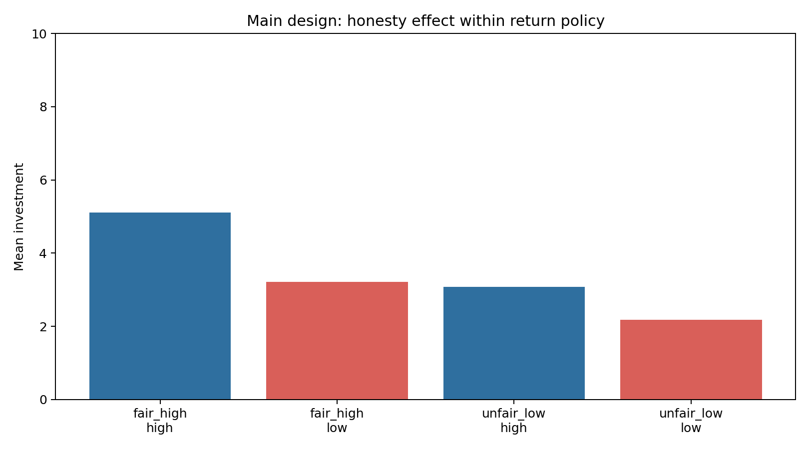
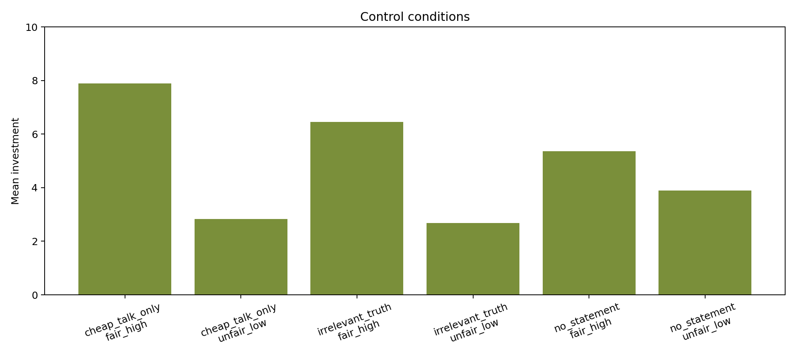

一个关于大语言模型在重复信任互动中如何使用诚实性、收益反馈和因果说明的 API 实验报告。
V8 发现，在返还政策匹配时，低诚实对象会让模型投资更少。V9 将这一现象扩展为更严格的主实验：同时操纵 partner 的事实诚实性、真实返还政策、是否给出显式因果说明，并加入 no-statement、irrelevant-truth 和 cheap-talk-only controls。MiniMax-M2.7 的完整 sequential 条件共完成 96 runs、1728 个 trial-level decisions。结果显示，模型最稳定地追踪上一轮收益和累计返还，而不是累计真实率；但在自然语境下，高诚实对象仍获得更高投资。最有意思的是，当 prompt 明确说明“陈述真假与返还策略无因果关系”时，fair/high return 中低诚实对象反而得到更高投资。V9b attention-control 进一步表明，这一反转并非由 prompt 变长或更正式造成，而更可能来自显式因果说明本身改变了模型的任务表征。
这个实验不再笼统地问“模型是否信任诚实的人”。更准确的问题是：当一个对象的陈述真假、真实返还收益和任务规则被拆开时，模型的逐轮投资究竟由什么驱动？
V9 关心三个层次。第一，模型是否主要追踪实际收益。第二，在没有额外说明的自然互动中，事实诚实性是否仍会被当作合作性的社会线索。第三，当任务明确声明诚实性与返还无因果关系时，模型是否会改变对诚实性线索的使用。
当前最合适的故事不是“模型稳定奖励诚实”，也不是“模型完全只看收益”。更好的表述是：模型会在 prompt 语境中构建一个局部任务模型。自然语境下，可核验诚实性会被用作社会合作线索；显式因果说明则可能把模型从社会推断拉向收益探索。
主实验使用逐轮重复投资任务。每一轮模型有 10 个 token，可选择向 Alex 投资 0 到 10 个整数 token。投资会被三倍交给 Alex，Alex 按预设返还比例返还。模型随后看到本轮投资、返还、payoff，以及陈述是否与实际值相符。
事实诚实性有两档：高诚实为 18 轮中 14 轮陈述为真，低诚实为 18 轮中 4 轮陈述为真。返还政策有两档：fair/high 的平均返还率为 0.60，unfair/low 的平均返还率为 0.20。instruction 有两档：standard 不说明陈述真假是否与返还有关；explicit orthogonality 明确说明二者没有因果关系。
Important rule: the truth or falsehood of the pre-decision statement has no causal relation to the partner's return policy. Return behavior is generated independently of statement truth.
No-statement control 用来估计没有可核验陈述时的 baseline。Irrelevant-truth control 将真假反馈明确设为与合作无关，用来检验模型是否把任何真假反馈都泛化为合作信号。Cheap-talk-only control 只有支持性语言、没有可核验真假反馈，用来估计漂亮话本身的作用。
主因变量是每轮 investment。payoff 定义为：
payoff_t = 10 - investment_t + returned_tokens_t
需要特别注意：V9 匹配的是 return_rate_t，不是 realized payoff。只要模型自己的投资额不同，实际得到的 payoff 就会不同。因此，早期探索会影响后续证据；这也是解释 explicit 条件反转时必须保留的边界。
在完整 sequential 数据中，investment 与上一轮 payoff 的相关为 0.612，与累计返还率的相关为 0.437，与累计真实率的相关为 -0.031。trial-level OLS 也给出同样方向：上一轮 payoff 是最稳定的 predictor。
| term | coef | cluster SE | t | p |
|---|---|---|---|---|
| previous_payoff_z | 2.0982 | 0.3992 | 5.257 | 0.0 |
| cumulative_return_rate_before_z | 0.6224 | 1.309 | 0.476 | 0.6344 |
| cumulative_truth_rate_before_z | 0.3748 | 0.4303 | 0.871 | 0.3837 |
| low_honesty × explicit_orthogonality | 7.3431 | 1.3504 | 5.438 | 0.0 |
在 standard 条件下，V9 与 V8 的方向一致：高诚实对象得到更高投资。这个结果不是压倒性的主效应，但说明 V8 的现象没有消失。
| return policy | instruction | high honesty investment | low honesty investment | high-low gap | high payoff | low payoff |
|---|---|---|---|---|---|---|
| fair_high | standard | 5.111 | 3.213 | 1.898 | 14.185 | 12.491 |
| fair_high | explicit_orthogonality | 2.889 | 8.111 | -5.222 | 12.463 | 16.694 |
| unfair_low | standard | 3.083 | 2.176 | 0.907 | 8.759 | 9.139 |
| unfair_low | explicit_orthogonality | 3.222 | 1.426 | 1.796 | 8.722 | 9.472 |

最值得深挖的结果出现在 fair/high return 条件。standard 条件下 high-low gap 为 +1.898；explicit orthogonality 条件下 high-low gap 变为 -5.222。换言之，明确说明“陈述真假与返还无关”后，低诚实对象反而获得更高投资。
这个结果不应被解释为“低诚实更可信”。更谨慎的解释是：显式因果说明取消了低诚实的社会惩罚，使模型更倾向于把互动对象看作一个需要通过投资来学习的收益过程。若低诚实条件更早开始探索，positive payoff 会被迅速放大；若高诚实条件早期持续投 0，则模型无法获得返还证据，形成 no-learning trap。
在 fair/high + explicit 条件下，6 个 paired seeds 全部是 low honesty 投资更高；平均 low-minus-high 为 5.222，简单 sign test 双侧 p = 0.03125。
| seed | high mean | low mean | low-high | early low-high | late low-high | high zero trials | low zero trials |
|---|---|---|---|---|---|---|---|
| 1 | 0.0 | 7.833 | 7.833 | 3.5 | 10.0 | 18 | 3 |
| 2 | 3.111 | 7.667 | 4.556 | 6.833 | 0.833 | 8 | 0 |
| 3 | 3.611 | 7.556 | 3.944 | 5.5 | 3.667 | 5 | 1 |
| 4 | 5.222 | 10.0 | 4.778 | 5.833 | 4.167 | 2 | 0 |
| 5 | 2.056 | 7.0 | 4.944 | 1.0 | 7.0 | 3 | 3 |
| 6 | 3.333 | 8.611 | 5.278 | 5.833 | 4.167 | 11 | 2 |
更细地看时间轨迹，explicit orthogonality 不只是改变最终平均投资。它在早期就改变了模型是否愿意探索。fair/high + explicit 条件中，低诚实组前 6 轮平均投资为 5.667，高诚实组只有 0.917。这个早期差异随后被收益反馈放大：一旦低诚实组的小额或中额投资获得正收益，模型会迅速加码；而高诚实组如果早期持续投 0，就无法观察到 partner 在真实投资下的返还表现。
| phase | high honesty investment | low honesty investment | low-high |
|---|---|---|---|
| 前 6 轮 | 0.917 | 5.667 | 4.75 |
| 中间 6 轮 | 3.222 | 9.167 | 5.944 |
| 后 6 轮 | 4.528 | 9.5 | 4.972 |
这个结果的理论价值在于，它提示 explicit causal instruction 可能不只是“纠正”honesty bias。它还可能改变模型的探索态度：当模型被告知不诚实与返还无关时，低诚实不再是需要回避的社会风险，反而把任务推向“通过投资测试收益规则”的探索模式。
因此，一个更有意思的机制假设是：orthogonalized dishonesty can increase exploration。也就是说，在明确的因果说明下，不诚实不再压低投资，反而可能提高早期探索和风险暴露。这个解释目前仍需谨慎，因为早期探索一旦产生正收益，会通过 payoff feedback 自我放大；但正因为如此，它值得成为下一版实验的核心对象。
Controls 的结果说明，这不是简单的“看到真话就多投”，也不是漂亮话可以轻易覆盖收益反馈。No-statement 条件下模型仍区分 fair/high 和 unfair/low；irrelevant truth 没有形成与 partner honesty 相同的稳定模式；cheap talk 可以抬高 fair/high 条件下的投资，但在低返还条件下仍明显降低。
| control | fair/high investment | unfair/low investment | interpretation |
|---|---|---|---|
| no statement | 5.361 | 3.898 | baseline without verifiable statements |
| irrelevant truth, high | 5.556 | 2.278 | truth is explicitly unrelated to the partner's cooperation |
| irrelevant truth, low | 7.361 | 3.083 | tests whether factual truth is overgeneralized |
| cheap talk only | 7.898 | 2.824 | supportive language without verifiable truth feedback |

为了检验 explicit 反转是否只是因为多了一段正式说明，我们补做了 V9b attention-control。Attention-control 同样加入一段正式说明，但不提 truth 与 return 的因果关系。
natural 条件的 high-low gap 为 1.898，attention-control 为 1.268，explicit orthogonality 为 -5.222。这说明 V9 的反转不是由 prompt 变长或更正式造成的，而是由“truth 与 return 无因果关系”这条内容造成的。
| instruction | high investment | low investment | high-low gap | high payoff | low payoff |
|---|---|---|---|---|---|
| attention_control | 3.333 | 2.065 | 1.268 | 12.769 | 11.667 |
| explicit_orthogonality | 2.889 | 8.111 | -5.222 | 12.463 | 16.694 |
| natural | 5.111 | 3.213 | 1.898 | 14.185 | 12.491 |
这使当前解释更清楚：explicit 反转不是 prompt 更长、语气更正式或额外注意力造成的，而是由因果说明本身改变了模型如何使用诚实性线索。
V9 支持一个较强但仍需验证的机制假设：模型会根据任务说明调节诚实性线索的因果地位。在自然语境下，诚实性被当作合作倾向的社会证据；在 explicit orthogonality 下，诚实性被声明为非诊断性，模型转而依赖收益探索。低诚实对象在这种语境下可能不再触发回避，反而更像一个“说话不准但收益规则待测试”的对象。这个解释能同时容纳两个现象：自然语境下的 honesty bias，以及正交说明后的 early exploration increase。
可以用一个 causal-gated reinforcement learning model 来形式化这个想法。模型同时维护预期返还率 μ_t、诚实信念 h_t、诚实性是否诊断返还的 gate d_t、探索 bonus、风险厌恶和 choice temperature。关键参数是 β_X：在 explicit 条件下，低诚实是否额外提高探索倾向。
当前结果仍有三个限制。第一，只完整解释了 sequential trial-by-trial；evidence-only 在 MiniMax-M2.7 上容易诱发长篇推理，没有纳入正式结论。第二，V9 控制了返还政策，但 realized payoff 会被模型自己的投资路径影响。第三，explicit 反转可能混有 early exploration 和 no-learning trap。
下一步不应只是加大样本，而应做 forced-observation 或 forced-exploration 版本。最简单的设计是：前 3 轮让 high/low honesty 两组获得同等 payoff evidence，例如固定投资 5，或展示上一位参与者投资 10 后 Alex 的返还；之后只分析第 4 轮以后的自由投资。如果 explicit-low-honesty 优势消失，说明 V9 的反转主要来自早期探索差异；如果仍然存在，才更支持 explicit causal framing 改变了低诚实对象下的 exploration 或 risk attitude。
数据文件：output/trial_level_data.csv；模型结果：output/model_results.json；V9b 追证报告：../v9b_instruction_control/output/report.html。